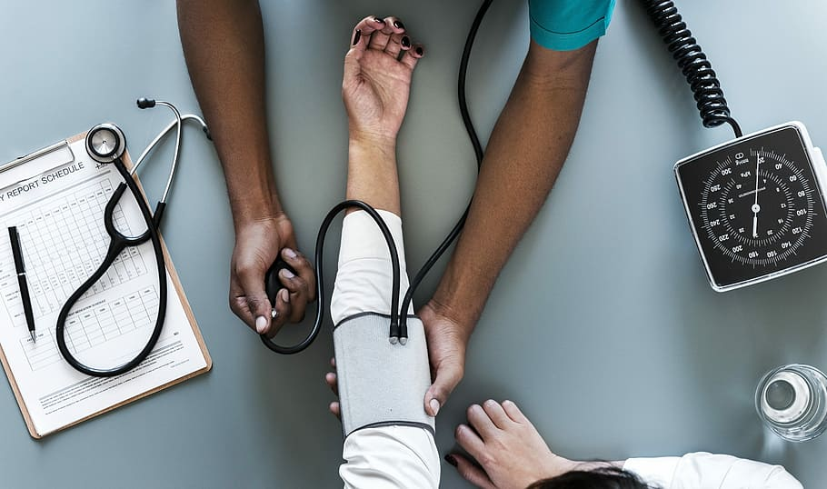

HIGH BLOOD PRESSURE

High blood pressure -- in men and women -- is a big problem. One in every three adult Americans -- about 65 million people -- have high blood pressure, also known as hypertension. Many more are at risk of developing it. Over half of all Americans age 60 and older have it and over a lifetime, the risk of developing high blood pressure is 90%.
Typically, blood pressure increases with age. Risk of high blood pressure begins to climb when people hit age 45, although it can occur in younger people. African-American people tend to develop it younger and have more severe hypertension. Obesity or a family history of high blood pressure also increases risk.
High blood pressure is especially dangerous because people can have it for years without knowing. In fact, 1 in 3 Americans with the condition doesn’t know it.
Despite these gloomy statistics, high blood pressure is not inevitable. There is plenty you can do to prevent, delay, and treat the condition.
What Is High Blood Pressure?
Blood pumping through the circulatory system is under pressure, much like the water in the pipes of a house. And just as too much water pressure can damage pipes and faucets, elevated blood pressure can spell trouble. Hypertension occurs when the force exerted against artery walls is abnormally high.
Over time, elevated pressure can cause a wide range of problems. Small bulges, called aneurysms, may form in blood vessels. The heart can become enlarged, increasing the danger of heart failure. Damage to blood vessels in the kidneys can cause them to fail. Because tiny blood vessels in the eyes are especially vulnerable to damage, hypertension can lead to vision problems and even blindness.
Many factors can lead to high blood pressure. Clearly, diet plays a role. Too much salt, too little potassium, and too much alcohol have all been found to increase the risk of high blood pressure. Too much stress and too little physical activity both increase the danger of developing high blood pressure, as does being overweight or obese. And as with many chronic illnesses, high blood pressure also tends to run in families, suggesting that genetics plays a role.
In some patients, high blood pressure is related to other medical problems or can be a side effect of certain drugs. This form of the disease is called secondary hypertension, because it happens secondary to other medical conditions.
How Is Blood Pressure Measured?
High blood pressure is usually diagnosed using the familiar blood pressure test that involves a cuff wrapped around the upper arm. The cuff is inflated and then sensors measure the pressure of blood beating against the arteries.
A reading appears as two numbers. The first, the higher of the two, is your systolic pressure. That's the force in the arteries when the heart beats. The second number is your diastolic pressure, or the pressure in the arteries when the heart rests between beats.
Normal blood pressure goes up from about 64/40 at birth to about 120/80 in a healthy adult. If someone were to take your blood pressure right after you gave a speech or jogged 5 miles, it'd probably be slightly high. This isn't necessarily cause for alarm: It's natural for blood pressure to rise and fall with changes in activity or emotional state.
It's also normal for blood pressure to vary from person to person, even from one area of the body to another. But if your blood pressure stays high, you should talk with your doctor about treatment. Hypertension forces the heart to work far beyond its capacity. Along with injuring blood vessels, it can damage your brain, eyes, and kidneys.
How High Is Too High?
People who have readings of 130/80 or higher on at least two occasions are said to have high blood pressure.
If yours is 180/120 or higher, get medical attention right away.
Your doctor could also tell you that you have something called prehypertension. That's when your BP is just a bit higher than 120/less than 80. About 75 million Americans fall into this category. Prehypertension can raise your chance of damage to your arteries, heart, brain, and kidneys. Many doctors say prehypertension should be treated. Still, there's no evidence that it provides long-term help.
Many people who have high blood pressure don't realize they have it. It's often called "the silent killer" because it rarely causes symptoms, even as it causes serious damage to the body.
Who Gets High Blood Pressure?
High blood pressure is more likely in people with a family history of high blood pressure, heart disease, or diabetes.
It's also more common in people who are:
African American
Older than 55
Overweight
Inactive
Heavy alcohol drinkers
Smokers
If you eat foods high in salt, or use medications like NSAIDs (such as ibuprofen and aspirin), decongestants, and illicit drugs such as cocaine, you also have a higher chance of getting high blood pressure.
What Is Secondary Hypertension?
When a direct cause for high blood pressure can be identified, that's secondary hypertension. Kidney disease is the most common cause.
Hypertension can also be brought on by tumors or conditions that cause the adrenal glands (the small glands that sit atop your kidneys) to release large amounts of hormones that raise blood pressure.
Birth control pills -- specifically those that have estrogen -- and pregnancy can boost blood pressure. Other medicines can, too. Check with your doctor to see if anything you take may cause your numbers to go up.
How Is High Blood Pressure Treated?
Doctors have a wide range of high blood pressure medicines available to treat high blood pressure. These high blood pressure treatments include diuretics -- often called "water pills" -- beta-blockers, calcium channel blockers, angiotensin converting enzyme (ACE) inhibitors, angiotensin II receptor blockers (ARB), and other types of medication.
As effective as these drugs can be at controlling blood pressure, if you get to the point of needing them, you may have to take them for the rest of your life. That is one more good reason to focus on prevention.